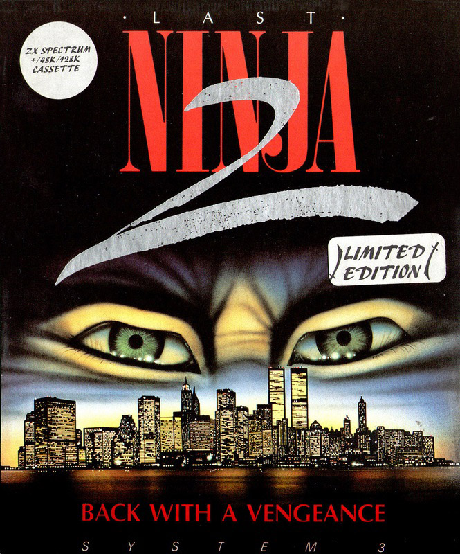
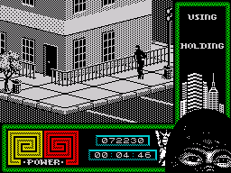

Last Ninja 2


{kind=link}

| Publisher: | System 3 |
| Price: | £12.99 Cass, £14.99 Disk |
| Year: | 1988 |
| Source: | CRASH, Issue 59 |

Ninja muggers in Central Park!
Long ago, in 12th Century Japan, mystical warriors called Ninja were almost wiped out during a purge by the evil Shogun, Kunitoki. A single ninja master, Armakuni, survived to continue the teaching however. Yet, strangely, during one of his subsequent training sessions a pulsating light enveloped him and magically transported to him to a strange new place. And so he must resume his battle with his ancient enemy, Kunitoki, in present-day New York, amid the strange surroundings of ‘gigantic shapes covered with mirrors’ (skyscrapers).
And so the adventure begins in the odd setting of a bandstand in Central Park, with beautifully detailed drums and music stands lying around the place. Armakuni starts out without any weapons whatsoever to help him. Yet even in this weird, new environment, he is safe in the knowledge that his ninja skills will see him through. Indeed, Central Park soon turns out to be littered with martial arts weapons such as shuriken stars, a staff and a sword.

practises his art
Combat is controlled in the usual beat-em-up style with combinations of directions and fire accessing a variety of moves. When unarmed, Armakuni can only kick or punch his opponent, but holding a weapon allows him to stab and slash them.
Apart from simple fighting, Armakuni must solve logical puzzles to progress further through six multiloaded levels (even on the 128K) at the end of which he will finally get to meet his arch-enemy, face to face.
20,000 special limited editions (worldwide) of Last Ninja 2 come in a huge (A5-ish) box, complete with a soft plastic shuriken throwing star (even that proved almost lethal to the office cat! — get well soon, Tiddles) and a black ninja mask (which Lloyd has taken to wearing instead of his usual paper bag.)
All this flashy packaging doesn’t automatically mean that the game is great but thankfully Last Ninja 2 lives up to the hype. It contains some of the most beautiful isometric graphics ever seen on a Spectrum. This creates a wonderful environment in which the puzzling action can take place. And puzzling it certainly is; especially at first, when even getting off the first screen is a problem.
But perseverance reveals a truly awe-inspiring game with great attention to detail in both graphics and gameplay. My only niggle is that the control system is rather awkward (especially if you haven’t got a joystick), but even this fails to spoil this oriental masterpiece.
PHIL ... 91%
NINJA KNOW-HOW
- Grab a weapon as soon as possible, you can’t defeat every enemy with your feet and fists alone.
- When an enemy starts throwing shurikens, walk in the opposite direction to him. So if he walks left you walk right, this way the shuriken will always miss you.
- If the fighting is getting too furious in one screen then just walk out and rest, when you feel up to it go back in again.
- Use the key to get through the gate to the river.
- Don’t fall in the water or you’ll drown!
- Use the claws to climb up the grating to get the staff.
- Keep alternating between kicking and punching to outwit your opponent.
This is a superb game. The graphics simply dazzle with the hero well drawn and beautifully animated — I especially like the way he draws his weapon. All this obviously makes the fiddly controls all the more frustrating until they’re mastered. Once they are, the highest priority is finding weapons because facing a shuriken star-wielding baddie with bare hands is no fun. The puzzles all have logical answers and half the fun is racking your brains trying to solve them. Last Ninja 2 is a great game which deserves to do well.
MARK ... 91%
Last Ninja 2: the long awaited sequel to a game which unfortunately never appeared on the Spectrum. Has the wait been worth it? The first thing that strikes you is the difficulty of the control methods available. You have a choice of three different modes but they are all impossible to master and your ninja ends up looking like a drunk. The programmer has obviously spent the majority of his time developing the graphics. They are excellent, but what is the point having great graphics and difficult, monotonous gameplay? Every few seconds you are killing someone, which involves pressing the same key over and over until your enemy dies (probably from boredom). But despite the terrible controls there are some challenging puzzles to be worked out making the game worth persevering with. Last Ninja 2 is worth buying for the excellent 3-D graphics, but if you have a short patience I won’t see you liking the controls.
NICK ... 87%
THE ESSENTIALS
| Joysticks: | Sinclair |
| Graphics: | An intricately-detailed isometric landscape with well-animated ninja sprites |
| Sound: | An ear-wrenching oriental title tune plus a few ingame effects |
| Options: | Choose between three joystick/movement modes |
| General rating: | Not just a beautiful graphics demonstration but an excellent, playable arcade adventure/beat-’em-up |
| Presentation: | 92% |
| Graphics: | 93% |
| Sound: | 61% |
| Playability: | 85% |
| Addictive qualities: | 90% |
| Overall: | 90% |